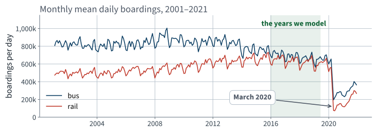
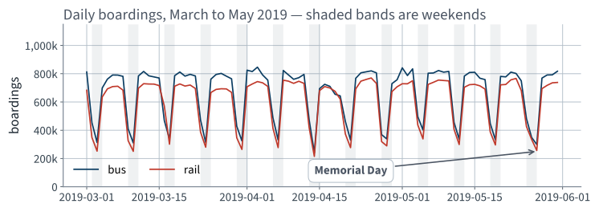
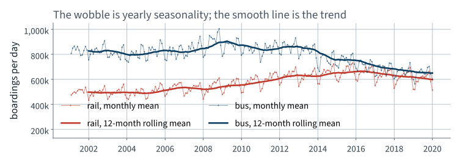
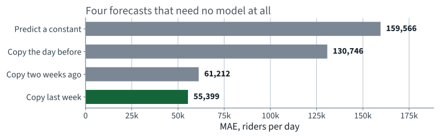
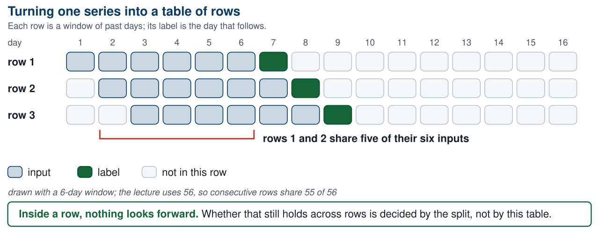
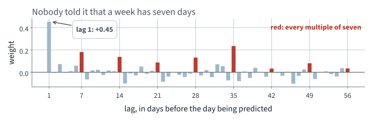
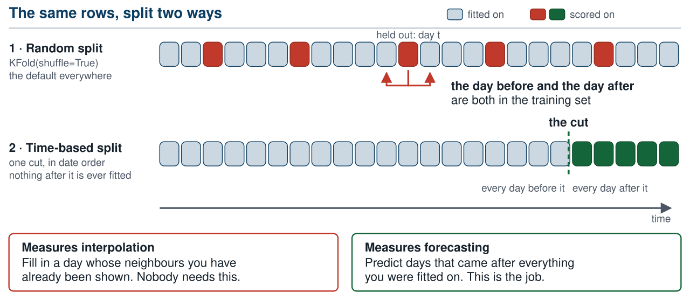
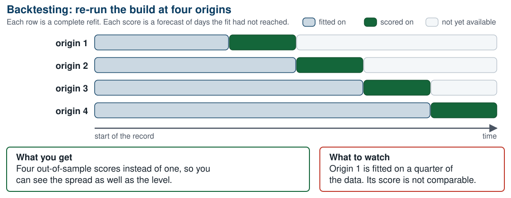
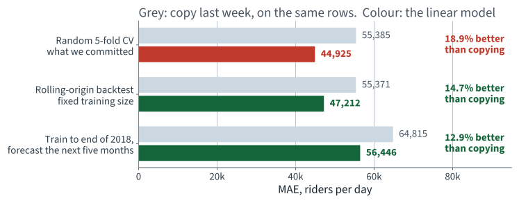
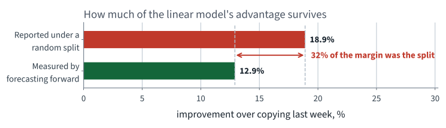

Chicago transit ridership
Lecture 15 Géron Ch. 13
Applications of Machine Learning
BSc Mathematics of Artificial Intelligence · Third year
Last lecture asked what is where, and how many:
You are a data scientist at the transit authority of a large city.
One number per mode, per day, one day ahead.
What decision does this number change?
Those decisions are made the evening before. That fixes the horizon at one day, and it fixes when the forecast has to exist: before the day it describes.
Forecast too high
Empty vehicles run. The cost is fuel, crew hours and a line in the budget. It is measurable and it is survivable.
Forecast too low
Passengers are left on platforms at peak. The cost is political, and it does not appear in any table you will be shown.
We are about to choose a symmetric metric anyway, and we should say so out loud rather than discover it later.
| Question | Answer | Because |
|---|---|---|
| Supervision | supervised | the day arrives, and then we know |
| Task | regression | a count, not a category |
| Learning mode | batch, offline | one row per day; the whole record fits in memory |
from pathlib import Path
import tarfile, urllib.request
import pandas as pd
def load_ridership():
tarball = Path("datasets/ridership.tgz")
if not tarball.is_file():
Path("datasets").mkdir(parents=True, exist_ok=True)
url = "https://github.com/ageron/data/raw/main/ridership.tgz"
urllib.request.urlretrieve(url, tarball)
with tarfile.open(tarball) as t:
t.extractall(path="datasets", filter="data")
return pd.read_csv(
"datasets/ridership/CTA_-_Ridership_-_Daily_Boarding_Totals.csv",
parse_dates=["service_date"])
Same shape as the loader in the first application. The data will change; you will be on another machine; write the function.
df = load_ridership()
df.columns = ["date", "day_type", "bus", "rail", "total"]
df = df.sort_values("date").set_index("date")
df = df.drop("total", axis=1) # it is just bus + rail
df = df.drop_duplicates() # and this one removes 62 rows
The file ships with 7,701 rows and 7,639 distinct ones. Sixty-two days appear twice, identically. Nothing warns you.
What was dropped — rows, columns, NaNs? Count them. Here the answer is 62, and you only know because you counted.
Measured on one run of this lecture’s notebook; hardware, library versions and random seeds can make a re-run differ slightly.
day_type | Meaning | Days |
|---|---|---|
W | an ordinary working day | 5,336 |
U | the second weekend day, and public holidays | 1,216 |
A | the first weekend day | 1,087 |
This column is unusual and worth pausing on: we know it in advance. The next day’s type is on the calendar today, so it is a legitimate input to a forecast of that day. Most features are not like that.
Measured on one run of this lecture’s notebook; hardware, library versions and random seeds can make a re-run differ slightly.

Bus falls, rail rises and then falls, and March 2020 is a cliff, not a dip. We model one regime: 2016 to the end of May 2019, 1,247 days.
Measured on one run of this lecture’s notebook; hardware, library versions and random seeds can make a re-run differ slightly.

A seven-day cycle so strong that it dominates everything else on the plot.
This immediately suggests a forecast that requires no model at all. Hold that thought.
At the end of May there is a deep trough in the middle of a working week. Ask the data rather than the calendar:
>>> list(df.loc["2019-05-25":"2019-05-27"]["day_type"])
['A', 'U', 'U']
Three consecutive non-working days: a public holiday extending the weekend. The column we were given already knows.
Every anomaly you find should end either in an explanation or in a note that you could not find one. Not in silence.

The thin line wobbles once a year; the thick line is where the level is actually going.
Seasonality
A pattern that repeats with a fixed period. Here: seven days, strongly; twelve months, weakly.
Trend
A slow movement of the level itself, with no period. Here: rail rising to about 2015, then falling.
A moving average of the right width removes the seasonality and leaves the trend. That is the whole content of the thick line.
The mathematics takes both of them out arithmetically, and that turns out to explain something about today.
A model assumes the rows it will meet are the same kind of thing as the rows it was trained on. For a series $\{y_t\}$ that assumption is weak stationarity, three conditions:
Only the first two moments, and only the requirement that the covariance forgets when and remembers only how far apart.
Define the difference operator, and its seasonal version at lag $s$:
Applied to a sampled function, $\nabla$ is a discrete derivative: it returns the slope at each step, so a linear trend becomes a constant. $\nabla_7$ compares each day with the same weekday a week earlier, so a seven-day cycle cancels.
Values are lost at the start each time you apply it.
Count those losses; the book’s diff returns
NaN there and says nothing.
Write $\rho_k = \operatorname{Cov}(y_t, y_{t-k})/\sigma^2$, the autocorrelation at lag $k$. Under weak stationarity,
So differencing at lag $k$ lowers the variance only if $\rho_k > \tfrac12$. The forecast “copy the value from seven days ago” has error $y_{t-7} - y_t = -(\nabla_7 y)_t$: its error is the seasonal difference, with variance $2\sigma^{2}(1-\rho_7)$. On our series $\rho_7 = 0.831$, so that is $0.34\,\sigma^{2}$.
Measured on one run of this lecture’s notebook; hardware, library versions and random seeds can make a re-run differ slightly.
Given the last eight weeks of daily boardings up to and including today, predict the next day. One number out.
Eight weeks is a choice, not a law: a whole number of weeks, so every position in the window sees the same weekday each time.
RMSE punishes a large miss quadratically; MAE does not; MAPE is relative and therefore unit-free.
We choose MAE: it is in passengers, and a handful of holidays cannot dominate it. MAPE goes beside it, because a percentage is what a stakeholder repeats back to you.
MAPE divides by the truth. On a day when ridership collapses, the denominator collapses too, and a modest absolute miss becomes an enormous percentage.
We use it as a second opinion, never as the objective.

Copying last week is 2.4 times better than copying the previous day. The seven-day cycle is worth more than recency.
Animation55,399
Mean absolute error of copy the value from seven days ago, over 1,191 days.
That is 12.0% of a typical day. On the three months the book plots it is better still: 42,143 for rail (9.0%) and 43,916 for bus (8.3%).
Measured on one run of this lecture’s notebook; hardware, library versions and random seeds can make a re-run differ slightly.

Every row is the row above it, shifted by one day. They overlap almost completely.
import torch
class TimeSeriesDataset(torch.utils.data.Dataset):
def __init__(self, series, window_length):
self.series, self.window_length = series, window_length
def __len__(self):
return len(self.series) - self.window_length
def __getitem__(self, idx):
end = idx + self.window_length # first index after the window
return self.series[idx:end], self.series[end]
Nine lines. The subtlety is entirely in
__len__ and in the single index end, which is both
the end of the window and the position of the label.
Fifty-six weights and a bias. If the model learns $w_6 = 1$ and every other weight zero, it has reinvented copy last week.
That is a useful thing to know before you start: the linear model contains the baseline. It cannot do worse unless we fit it badly.
44,925
Against 55,399 for copying last week, under shuffled five-fold cross-validation.
18.9% better, and the five folds run from 39,538 to 51,096. Over twenty different shuffles the mean moves by about 300, so the improvement is far larger than the noise in the estimate.
Measured on one run of this lecture’s notebook; hardware, library versions and random seeds can make a re-run differ slightly.

Every red bar is a multiple of seven, and every red bar is positive. That is the weekly cycle, learned rather than supplied.

The upper protocol asks the model to fill a gap. The lower one asks it to forecast. Only one of those is the job.
Cross-validation estimates the risk
It is unbiased for $R$ under two conditions:
A shuffled split of a time series satisfies neither.
$\operatorname{Cov}(y_t, y_{t+k}) = \sigma^2\rho_k$, which is $0.83\,\sigma^2$ at $k=7$ and never near zero for $|k| \le 56$. The rows are dependent by construction.
Smaller conditional variance means smaller achievable loss, so the estimate is biased downwards. Positive autocorrelation fixes the direction of the bias: optimistic in the overwhelming majority of cases.
Not “always”. That would be a theorem, and we have not proved one — the argument above is a heuristic about conditional variance, not a bound. What we have is a measurement: on this series, 9–10% after matching training size, test size and the baseline.
In deployment, every training day precedes every day being forecast.
Under a shuffled split, on average half the training days come after the day being scored.
Fit on everything up to the end of 2018; forecast the five months that follow, one day at a time, never seeing any of them.
| Model | Random split | Forecasting forward | Gap |
|---|---|---|---|
| Linear, 56 lags | 44,925 | 56,446 | +25.6% |
+25.6%
The same model’s error, once it has to forecast forward. Not all of it is the split — the next slides take it apart.
Measured on one run of this lecture’s notebook; hardware, library versions and random seeds can make a re-run differ slightly.

Four refits, four out-of-sample scores, and a spread you could not get from a single cut.
Animation
Copying last week needs no fitting, so it measures only how hard the scored rows are. Against it, the margin falls from 18.9% to 12.9% as the protocol becomes honest.
Measured on one run of this lecture’s notebook; hardware, library versions and random seeds can make a re-run differ slightly.
Changing the protocol also changes how much the model trains on. Hold it fixed: same training size (700 rows), same test size (98 rows), same model — only the arrangement differs. Score each against copying last week on its own rows, which cancels the difficulty of the period:
| Protocol | Model | Naive | Ratio |
|---|---|---|---|
| random draws of 98 rows, 20 of them | 48,093 | 61,461 | 0.782 |
| rolling origin, 5 origins | 47,212 | 55,371 | 0.853 |
The random split reports the model as 9.0% more skilful than it is.
Measured on one run of this lecture’s notebook; hardware, library versions and random seeds can make a re-run differ slightly.
The linear model is overstated by 7.4%. The recurrent network the next lecture builds will be measured the same way — forward in time, against copy-last-week on the identical rows — so its number can be read against this one.
Measured on one run of this lecture’s notebook; hardware, library versions and random seeds can make a re-run differ slightly.

We told them our linear model was 18.9% better than doing nothing. It is 12.9% better. A third of the case for building it was an artefact of the evaluation.
Measured on one run of this lecture’s notebook; hardware, library versions and random seeds can make a re-run differ slightly.
Even a clean cut leaks a little: the last training window overlaps the first scored day’s history. The repair is to leave a gap — purging the overlapping rows and adding an embargo of a window length after the cut.
Purging and embargo are standard practice in financial backtesting and are outside the book; not examinable. The idea — that adjacency itself is a channel — is examinable, because we derived it.
Measured on one run of this lecture’s notebook; hardware, library versions and random seeds can make a re-run differ slightly.
What to change: shuffle the rows before splitting and re-run the evaluation — the failure condition below, produced by you rather than quoted at you.
Not presented — for afterwards
five, in the style of the written paper
Solutions on Lecture 16’s deck.
KFold(shuffle=True) and reports a good score. Name the two conditions the split violates. [5]Solutions on Lecture 16’s deck.
Measured on one run of this lecture’s notebook; hardware, library versions and random seeds can make a re-run differ slightly.
The five set at the end of Lecture 14
not part of this lecture
1. Two boxes are disjoint and moved further apart. State what IoU and its derivative do, and why no learning…
Both are identically zero; a constant has no descent direction.
2. A detector counts objects with MAE 3.00 at the conventional score cut-off of 0.5. A sweep over the same 128…
The cut-off was chosen on the same images the error is reported on, so 1.92 is optimistic by construction; quote it as a diagnostic, beside the 3.00 at the threshold fixed before looking.
3. Average precision is defined with a maximum inside it. State what that maximum repairs, and which earlier…
It replaces the non-monotone precision by its running maximum — the non-monotonicity proved in Lecture 3.
4. mAP is a mean over classes of a mean over IoU thresholds. Give one thing each averaging hides.
The class mean hides that a one-instance class weighs as much as a 350-instance one; the threshold mean hides the spread between loose and tight matching.
5. Your mAP over IoU 0.50 to 0.95 on 128 COCO images is 43.9; torchvision reports 37.0 for the same weights on…
Run a reference evaluator on the same predictions and annotations (ours agreed to 0.0014); the gap is then the sample — 128 images, many easy, and classes with a single instance.
Lecture 16 · Géron Ch. 13
A recurrent cell, unrolled, and trained by backpropagation through time
Forecasting several steps ahead, and a ranking that flips between runs
LSTM and GRU gates, the final table against copying last week, and the
2020 regime change
Run the Lecture 15 notebook first